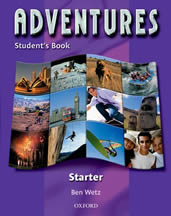
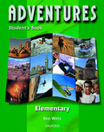
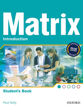
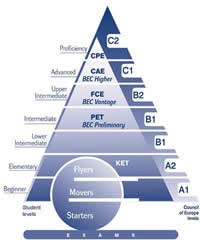

Adventures

Adventures

Matrix

Cambridge Levels

Курсове по английски език за ученици 5-12 клас
Английска програма за тинейджъри и гимназисти
Курсове по английски език за ученици
Нашата цел е да помогнем на учениците да се почувстват уверени в своите знания и да се мотивират да изучават английски език. Интересните игри и състезания въвличат тинейджърите в процеса на учене. Те се чувстват удобно в час и не се притесняват да общуват на английски език.
Учебната система е на издателство Oxford University Press. Тя е изключително богата на лексика и граматични конструкции. Темите в учебника са увлекателни и забавни за учениците на тази възраст. Те биват въвлечени в свят на рок музика, концерти, филми, лагери, експедиции и др. Балансирано разпределеният материал помага на учащите да усвоят четирите езикови умения - четене, слушане, писане и говорене.
Програмата Young Teens 1 е създадена специално за деца в 4 и 5 клас, които не са изучавали английски език до сега или имат нужда от затвърждаване на изучаван материал. След завършване на нивото Вашето дете има възможност да получи сертификат за владеене на английски език на University of Cambridge- Starters или Movers.
По време на програмата учениците:
- Постепенно развиват уменията си за говорене, като усвояват лексика, граматика и граматични конструкции в контекста на интересни теми и диалози.
- Пишат съчинения и разработват проекти от 140 думи на близки за тях теми.
- Учат се да пишат писмо, статия, резюме и др.
- Четат две книжки - класическа английска литература.
Програмата Young Teens 2 е създадена специално за ученици в 5 и 6 клас, които са изучавали английски език. Тя е естествено продължение на програмата за деца Primary 4. След завършване на нивото Вашето дете има възможност да получи сертификат за владеене на английски език на University of Cambridge - Flyers.
Програмата Teens е разработена за ученици в 5 и 6 клас, които са изучавали английски език. След завършване на нивото Вашето дете има възможност да получи сертификат за владеене на английски език на University of Cambridge.
По време на програмите учениците:
- Гледат видео уроци, които обогатяват речниковия им запас.
- Пишат съчинения и разработват проекти от 160 думи на близки за тях теми.
- Учат се да пишат есе, писмо, статия, резюме и др.
- Четат две книги - класическа английска литература.
Курсове по английски език за ученици 8-12 клас
Програмата High School е разработена в пет поредни нива:
- High School 1 – Elementary
- High School 2 – Pre-Intermediate
- High School 3 – Intermediate
- High School 4 – Upper-Intermediate
- High School 5 – Advanced
Учениците постепенно и трайно усвояват английската граматика, развиват езиковите умения за говорене, слушане с разбиране, четене и писане и натрупват богат речников запас. Гимназистите четат книги на класически и съвременни английски автори, дискутират интересни за тях моменти. Пишат есета, статии, резюмета на филми, книги и др.
След края на учебната година, учениците на ENGLALAND имат възможност да се явят на изпит за най-престижния сертификат на University of Cambridge за големи FCE, CAE, CPE и IELTS и да получат международна диплома.
Какво представляват сертификатите на University of Cambridge за големи FCE, CAE, CPE и IELTS?